beplainMUNG BEAN pH-BALANCED CLEANSING FOAM
녹두 약산성 클렌징 폼
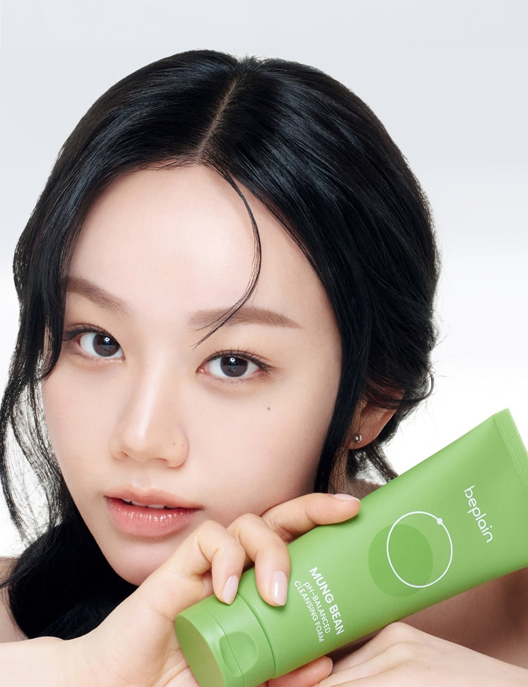
혜리*2026년 5월 누적입고량 기준
*2026년 5월 누적 입고량 기준
대한민국 국민 3명 중 1명*이 경험한
진짜 #국민세안제 녹두폼
*2026년 5월 누적입고량 2,000만개 기준, 소비자 이해를 돕기 위해 1인 1개 구매를 가정해 환산한 수치
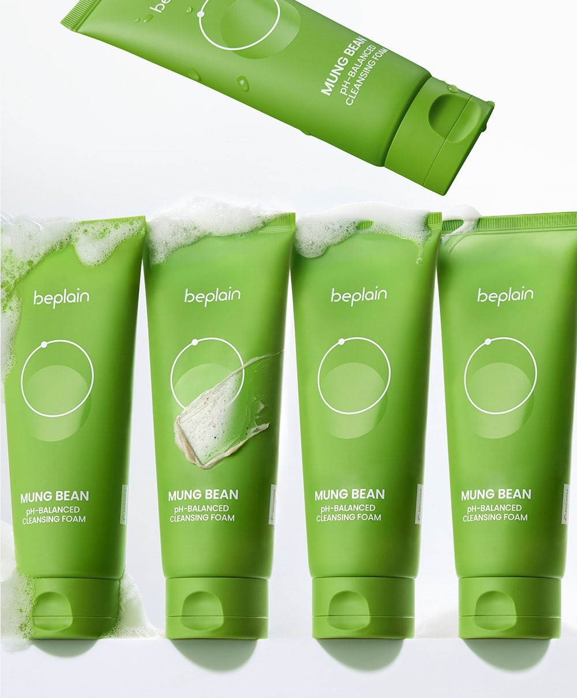
이젠 기존 저렴한 클렌징폼에서
다 - 되는 클렌징
떠오르는 국민 세안제
온라인몰 판매 랭킹
올리브영 어워즈
화해 뷰티 어워드
뷰티고수가 인정한
*2026년 5월 누적 입고량 기준
뭐 하나
빠지지 않는 스펙!
지금까지의 클렌징폼과 비교불가
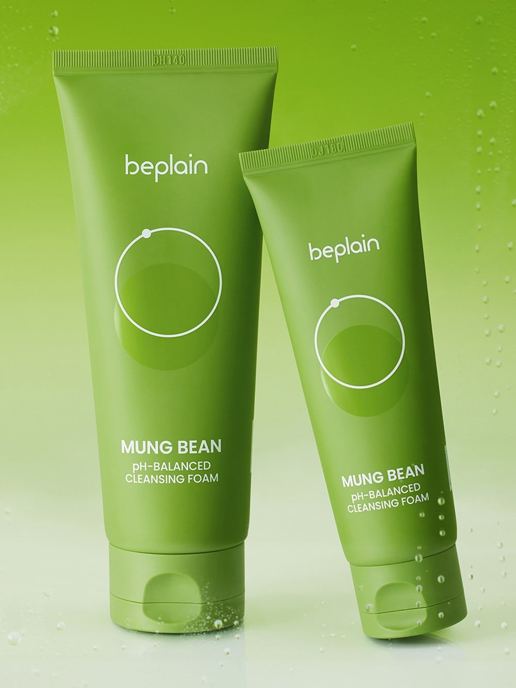
POINT 01
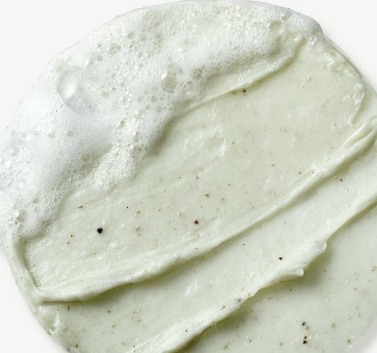
곱고 부드러운 입자의
녹두가루가 콕콕
국내산 녹두가루와 건강한 녹두 거품이
코 옆, 턱 밑은 물론
모공 속 노폐물, 피지까지
구석구석 말끔하게 세정
사용 직후 피부 피지량1
모공 속 노폐물 세정력1
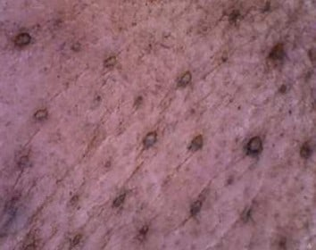
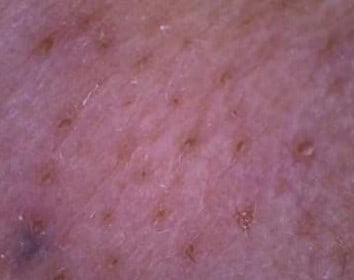
POINT 02
여드름성 피부도
0361014
건강한 피부의 pH 농도는 약(미)산성 상태
녹두폼은 약산성 제품이므로
매일 자주 써도 순하고 편안합니다
또한 피부 자극 테스트를 완료하여4
안심하고 사용 가능합니다
여드름성 피부에
사용하기 적합한 것 같다
여드름성 피부
사용적합Clinically Tested
*여드름성 피부 사용 적합에 대한 인체적용시험 중 설문 긍정응답 비율
하루 종일 외부 자극 받은 피부
녹두 세안으로 편안하게 진정시켜주세요
자극 전
자극 후
사용 30분 후
녹두폼
사용부위
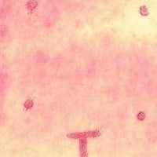
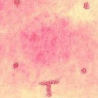
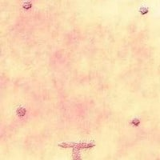
미사용
부위
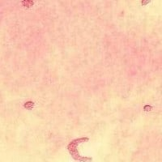
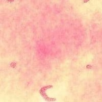
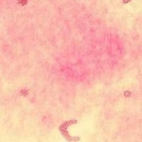
피부 정화에 탁월한 원료, 녹두
세안제가 없던 신라시대에는
녹두가루로 세안을 할 정도였답니다
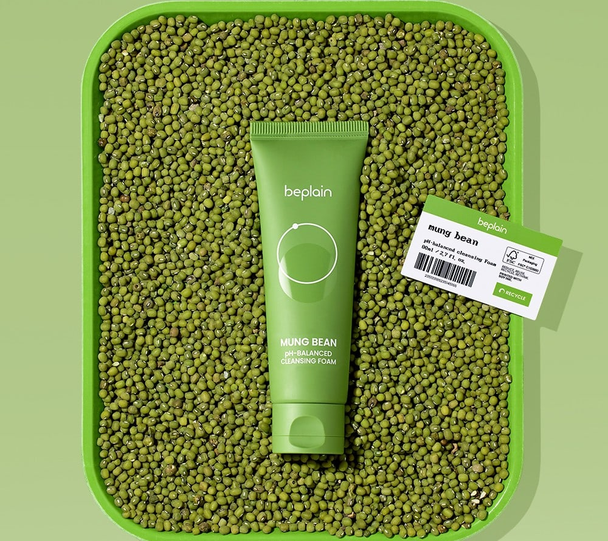
충청북도 오창에서 정성스레 재배한
국내산 녹두 가루를 가득 넣어
피부 정화는 물론 피부 개선에 도움을 줍니다
POINT 03
세안만 했을 뿐인데1
맑고 투명한 피부를 원한다면
POINT 04
사용 2주 후 피부 속 수분량
3.095% 증가약산성 녹두 거품은
폴리올 성분을 30% 이상 함유하여
폴리올 성분
*상기 정보는 원료적 특성에 한함
POINT 05
세안 후 느껴지는
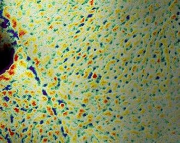
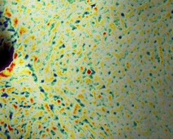
거친 피부를 부드럽게 케어하는
녹두폼에 담긴 고운 녹두 가루로
HOW TO USE
세안도 쉽고 즐겁게
STEP 1
세안 시 적당량을 덜어
물과 함께 거품을 냅니다
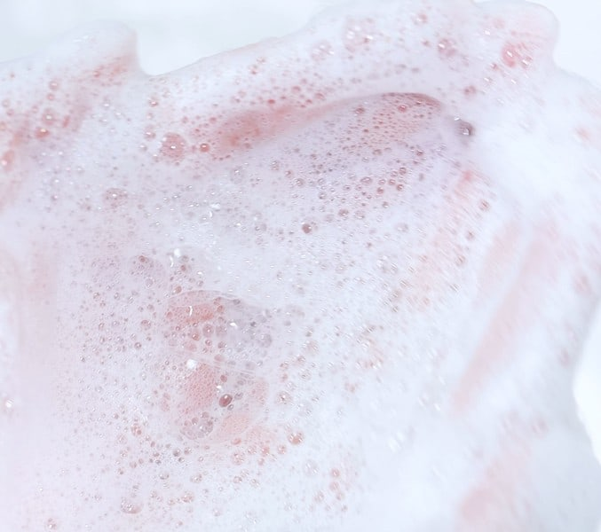
STEP 2
부드럽게 롤링하여 피부 결을 마사지한 후
미온수로 깨끗하게 씻어냅니다
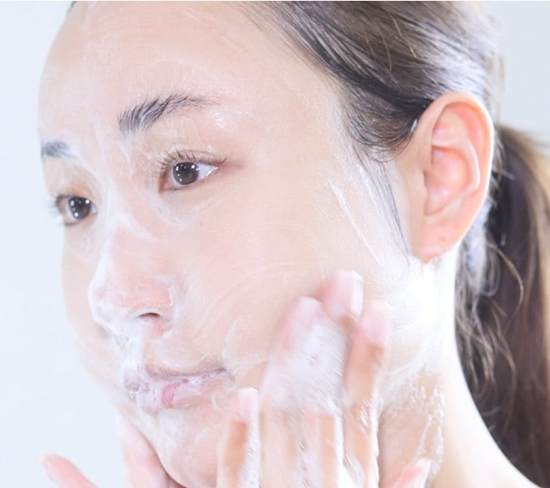
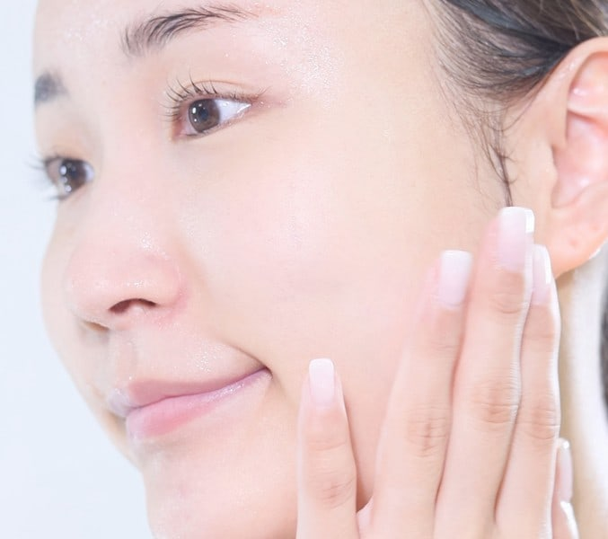
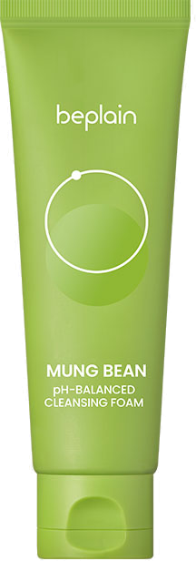
beplain
80ml
인체적용시험 · 수상 안내